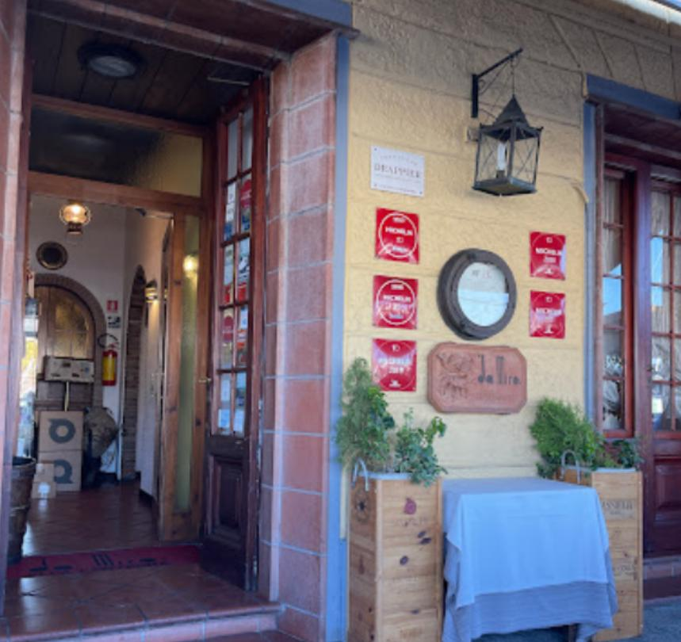
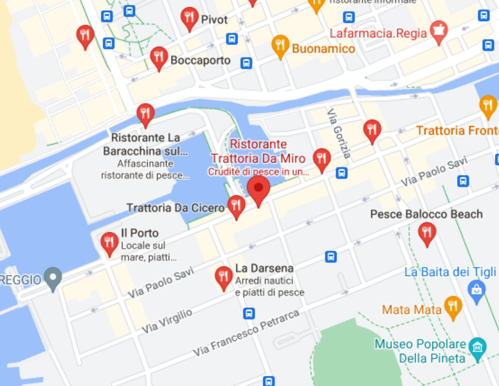
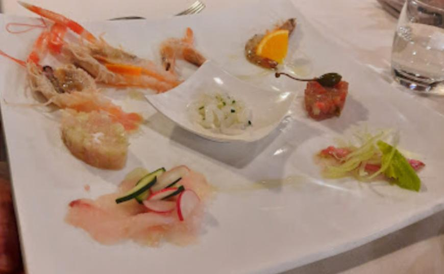

Il Ristorante Trattoria Da Miro è stato aperto nel 1975 da Palmiro Angelo Bibbiani a Viareggio.

Clicca sull'immagine per vedere dove siamo su Google Maps

I principali piatti proposti sono i seguenti:
